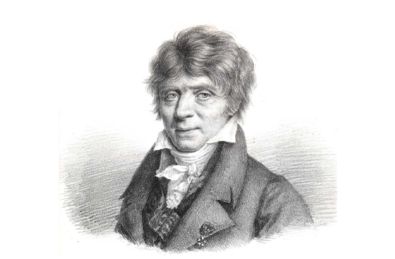

У своїй машині Бебідж використав також технологію обчислень, запропоновану наприкінці XVIII сторіччя французьким вченим Гаспаром де Проні. Він розділив обчислення на три етапи: розробка чисельного методу, створення програми послідовності арифметичних дій, проведення обчислень шляхом арифметичних операцій над числами згідно зі створеною програмою.
Серед учених, які зробили значний внесок у розвиток обчислювальної техніки, була математик леді Августа Лавлейс — дочка видатного англійського поета лорда Байрона. Саме вона переконала Бебіджа у необхідності використання у його винаході двійкової системи обчислення замість десяткової. Вона також розробила принципи програмування, що передбачали повторення послідовності команд та виконання цих команд за певних умов. Ці принципи використовуються і в сучасній обчислювальній техніці.
Чарлз Бебідж вперше висловив ідею використання перфокарт в обчислювальній техніці, але реалізовано цю ідею було тільки 1887 року Германом Холерітом. Його машина була призначена для обробки результатів перепису населення США. Також Холеріт уперше застосував для організації процесу обчислення електричну силу.
1934 року німецький студент Конрад Цузе, який працював над дипломним проектом, вирішив створити у себе вдома цифрову обчислювальну машину з програмним управлінням та з використанням (вперше в світі) двійкової системи числення. 1937 року машина 21 (Цузе 1) запрацювала. Вона була 22-розрядною, з пам'яттю на 64 числа і працювала на суто механічній (важільній) базі.
Перша ЕОМ, яка зберігала програми у пам'яті, дістала назву ЕДСАК (Electronic Delay Storage Automatic Calculator — електронний калькулятор з пам'яттю на лініях затримки). Вона була створена в Кембріджському університеті (Англія) 1949 року. З того часу всі ЕОМ є комп'ютерами з програмами, які зберігаються у пам'яті.
Суттєвий внесок у створення ЕОМ зробив американський математик Джон фон Нейман, що брав участь у створенні ЕНІАКа. Фон Нейман запропонував ідею зберігання програми в пам'яті машини. Такі ЕОМ були значним кроком уперед на шляху створення більш досконалих машин. Вони були здатні обробляти команди в різному порядку.
1951 року в Києві під керівництвом С. Лєбєдєва незалежно було створено МЕОМ (Мала Електрична Обчислювальна Машина). 1952 року ним же було створено ШЕОМ (Швидкодіюча Електрична Обчислювальна Машина), яка була на той час кращою в світі та могла виконувати близько 8 тисяч операцій за секунду.
Перші електронні комп'ютери з'явилися в першій половині XX ст. На відміну від попередніх, вони могли виконувати задану послідовність операцій за програмою, що була задана раніше, або послідовно розв'язувати задачі різних типів. Перші комп'ютери були здатні зберігати інформацію в спеціальній пам'яті.